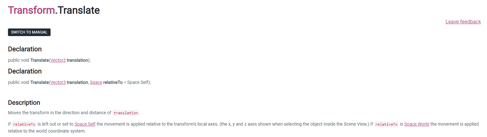

Blog
"Hello World", I Mean C#
Jan 1 - Written by Cal

I've always wanted to get back into programming, partly due to how interesting I found it back in college when I was studying Software Engineering. Specifically, game development was something that always interested me. I've decided to self-educate on how to program and develop video games.
Game development has always been on my mind when it comes to a potential career path, but hesitancy and self-doubt seemed to trail in constantly. The thought of not having a degree or professional background in anything related to programming bothered me and prevented the continuance of learning about the fundamentals behind gaming. It’s never a waste of time learning more about a subject. So let’s get back into it.
First, I wanted some type of structure to get started. Udemy is a great site when it comes to learning programming (or basically anything). My main focus was to learn how to use Unity first. I’ve heard it’s a great first game engine, with the C# language being fairly easier than many. I decided on the course "The Ultimate Guide to Game Development with Unity (Official)" because of its high ratings and partnership with Unity Technologies. I would recommend buying this course when Udemy has one of their sales (which is very often and lasts awhile). It cost me $12.99 USD during the sale and it normally costs $99.99 USD.
This course also provides a great Q/A comment section, as well as a Discord server where you can receive quick help from one of the owners or mods. The video material is about 21 hours long but it definitely took me longer to complete because of the challenges they provide. The challenges were great because they allow for the student to troubleshoot on their own by researching across the internet (even the pros do this). Oh, and they also give you a certificate of completion after which is always good to print out and keep.
One of those research destinations is Unity’s Documentation site where it provides a huge library of their Scripting API.

Some concepts I learned so far:
- How to move camera/lighting/scene view
- How to create/move my character in regards to 2D, 2.5D, and 3D
- How to “collect” items and display on a UI Manager
- How to communicate with another script from your current script (I remember this being difficult when I was younger but it made much more sense when I actually paid attention)
- How to form and initiate given images into an animation sequence
- How to respawn/restart a character and game
What I look forward to learning:
- Creating my own assets in Blender
- Mapping a boundary path on floor (specific places where the character can walk/not walk to)
- Messing with more lighting settings
- More complex coding concepts and shortening my coding lines for efficiency